Зима и лето. Закрытие мамайского сезона
( 21 - 22 апреля 2007 )
часть 1 суббота
Солнечное утро, на небе ни облачка. Самое время проснуться пораньше и двинуть в северный цирк.
Проснуться то проснулись, но двигаться, за исключением гуру, никто не хочет :) "Лениво"... Да, похоже
сегодня будем разлагаться под солнышком. Вот только проведем поисковые работы по вчерашним
замерзшим следам... Рацейка нашлась на середине мега-траверса в добром здравии, так что минус
штука со счета проклятий злого сатаны :) На обратном пути находяги раскатали небольшой склон и с
чистой совестью пошли на травку - открывать летний сезон. |
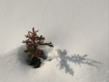 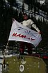 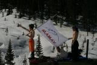 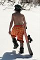
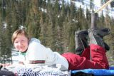 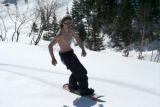 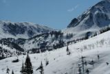
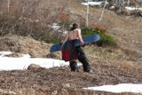 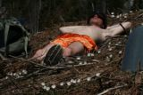 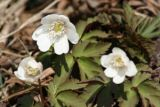
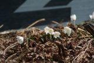 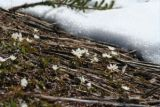 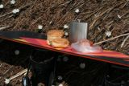
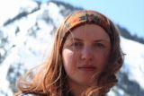 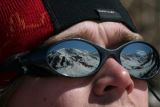
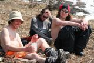 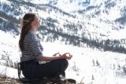
Апрель. Мамай. Пожалуй, в следующем сезоне надо взять отпуск и пожить тут неделю.
Море теплого снега. Комаров и клещей нет. Медведя тоже пока не видно. Хотя муравьи
и бурундуки уже бегают...
И как-то не верится, что зимний мамайский сезон закрыт. Наверное мы сюда еще вернемся,
в летнем сезоне, покататься на сноубордах и построить новое "легендарное жилище" :) |
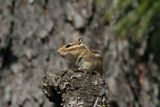 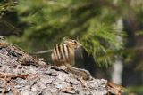
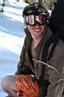 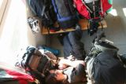 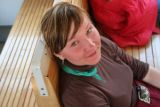 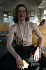
Дорога домой: Лёха на тропе, Макс в рюкзаках , Катя, Андрей и Ксюша по лавкам...
Сноуботы мокрые от хождений по лужам бывшего снега...
Лица красные от хождений под ультрафиолетом...
То ли еще будет на Тальцинском и на Мунку :)
PS: на заходе, возле чумового городка видел соболюшку и
свежие следы загадочного снегоходчика. Кто бы это был?
PS: на обратном пути, на тропе нашелся потеряный плеер,
так что еще минус три штуки со счета проклятий ацкого жгуна :)
PS от Katrin: ну, п---ц! Круто...
Макс, твой "докрученый" куки-грэп и "Хуй"- просто
мегакруто! + ананасы...птичка!
Леха, гуру рулит! Апельсиновые шорты - шикарно!
Ксюха, нижнее белье, бордерские ботинки - дико красиво... и ...счастье,
кусочками! :)
Андрей, топлес и отражение снежных вершин в глазах - загадочно!
А вообще,скрытое западло и лениво...:)
PS от КСЮ: Лёшка!!! Ну как можно так писать???…так
классно!
Я не учла опыт прошлого и села за комп – читать отчёт – с чашкой кофе…Хорошо,
что успевала его проглатывать перед каждой коркой – обошлось без жертв
;)
…и шикарны не только апельсиновые шорты, но и флейта на Мамае))))) правда,
пальцы замерзают )
А Катюшка наша, вообще, молодчина! С больным-то коленом «бегать» там за
этими «бегунами на длинные дистанции в гору с грузом» ))) «Кать, осталось
маленько: всего-то подняться вот еще на эту вершинку, потом спуститься,
подняться и еще пройти…»
Катюх, классно побатонили на крыше кунга с кофе…)) так лениво-лениво…
Макс, в следующий раз бери больше ананасов. Какой же Новый год без ананасов???!!!
)))
Андрюхе особое спасибо за спасение моей ноги; и за терпение к фотографу
как у проф. фотомодели ) Мои друзья подумали, что то отражение гор в твоих
очках – это фотошоп!
P.S. …а представляете, сколько цветов там было бы вытоптано, если
бы приехали все, кто обещался…)) Классно быть впятером на весь МАМАЙ!
Апрель 2007
Текст: Алексей Белокрылов
Фото: Ксения Шультайс, Алексей Белокрылов
|